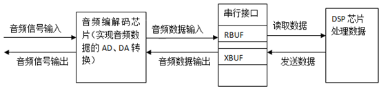
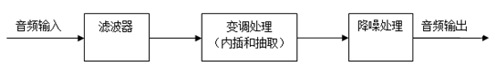
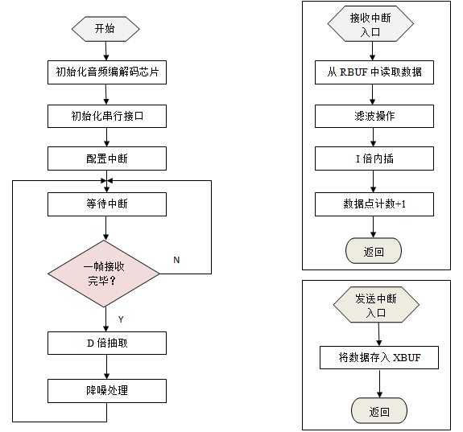

Crallogag
A DSP-Based Real-Time Voice Changer
Background
DSP（digital signal processor），即数字信号处理器，是一种专用于数字信号处理的微处理器，可以方便地使用C语言与汇编语言编程，在数据通信、汽车电子、图像处理以及声音处理等领域应用广泛。Functionalities
- 设计实时语音变声系统，对语音信号进行采集、存储、变换、回放，实现升调和降调的功能;
- 设置一个变量RisingTone：当RisingTone=1，频率变化α=f/f0=4/3，实现升调功能；当RisingTone=0，频率变化α=f/f0=3/4，实现降调功能。
硬件系统的基本结构如下，主要包括
- 音频编解码芯片：实现输入音频信号的数字化（或输出音频数据的模拟化），以串行方式与串行接口相连。
- 串行接口：将接收到的音频数据通过移位寄存器（实现串并转换）存入RBUF，或从XBUF中将待发送的音频数据取出经过移位寄存器发送给音频编解码芯片。音频数据点类型为Uint32。
- DSP芯片：负责对数字化的音频数据进行处理。
-

DSP内部数据处理流程如下，主要包括
- 滤波器：负责滤除输入音频经过硬件电路导致的杂音。
- 变调处理：采用内插和抽取方式，I倍内插（在每两个数据点间插入I-1个0）使频率降低I倍，D倍抽取（抽除间隔为D的两个数据点间的D-1个数据点）使频率升高D倍；同时进行内插和抽取，可以使频率变化（D/I）倍；
- 降噪处理：由于降调后会多出一些数据（插入数据点>抽出数据点），而升调后会减少一些数据（插入数据点<抽出数据点），因此需要相应地对数据进行删除和拼接，以及在删除和拼接处进行平滑处理，否则会使音频出现喀嚓声。
-

采用专用开发平台CCS5.1对DSP芯片编程：
- 首先对音频编解码芯片和串行接口进行初始化，并配置DSP芯片的中断功能，使其允许发送和接收中断。然后进入一个一直执行的循环。
- 在这个循环中，等待中断请求并对接收到的数据进行内插和降噪处理。接收中断程序完成对数据的滤波，并在数据存储时完成内插操作（每960个数据点为一帧，存入一个数组，以帧为单位处理数据）；发送中断程序只负责将数据存入XBUF中。

- 在配置音频编解码芯片和串行接口时，需要参考芯片厂家给出的函数封装说明和数据手册，步骤比较繁杂；
- 在配置DSP芯片中断时，需要将中断服务程序的入口地址映射到程序进入中断后自动跳转到的地址中去（该地址处分配给中断服务程序的空间较小，因此需要在此处设置另一个地址的入口，跳转到另一个较大的空间执行中断服务程序）。
- 在滤波和降噪程序中需要特别关注数据的类型，因为在滤波计算过程中有相乘和累加步骤，会出现数据的溢出，因此需要定义一个较长数据类型的中间变量；在降噪平滑的计算中存在除法，需要将表达式拆分成多个乘法、加法表达式，并且也要注意溢出问题。